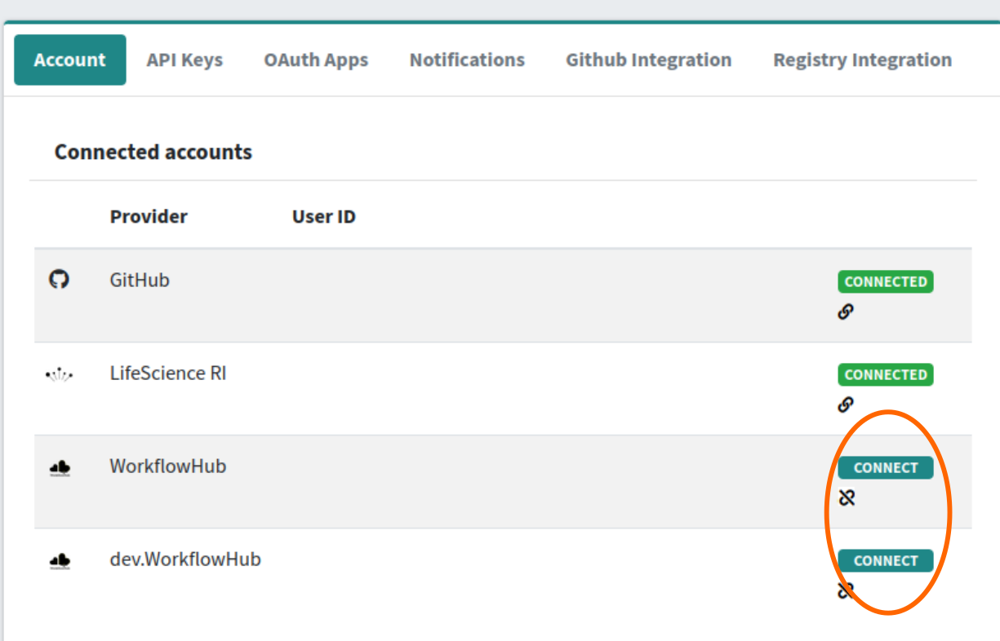
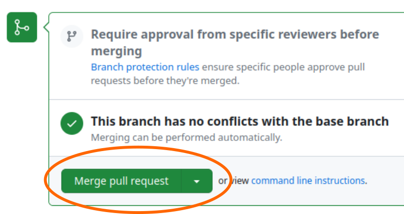
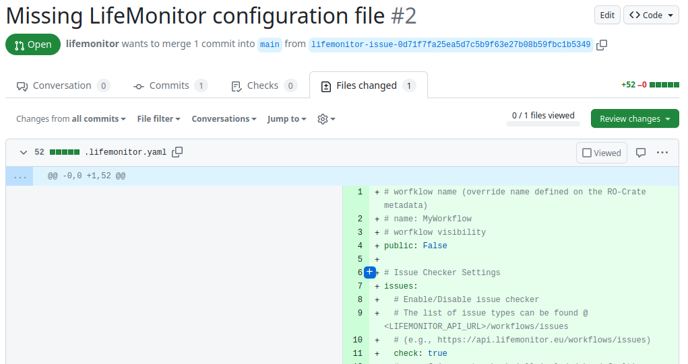

Submitting workflows to LifeMonitor
| Author(s) |
|
| Editor(s) |
|
| Reviewers |
|
OverviewQuestions:Objectives:
What is LifeMonitor?
How is it useful to me?
How can I automate things?
Requirements:
Setup Life Monitor
Time estimation: 30 minutesSupporting Materials:Published: May 11, 2023Last modification: Sep 26, 2024License: Tutorial Content is licensed under Apache-2.0. The GTN Framework is licensed under MITpurl PURL: https://gxy.io/GTN:T00342version Revision: 4
Life Monitor (LM) is a service to support the sustainability and reusability of published computational workflows. The LifeMonitor helps alleviate the burden of maintaining workflows over time through automation.
This document will show you how to use the LifeMonitor service and its GitHub app on a workflow in a GitHub repository.
AgendaIn this tutorial, you will learn how to create a git repo, and begin working with it.
Why use the LifeMonitor?
Keeping workflows reusable takes work! Like all software, even the best workflows can break over time if left unmaintained: for instance, there could be a regression or an API change in an unpinned dependency, or an external resource that the workflow relies upon might be moved to a different URL. Periodic automated testing is a fundamental practice that helps expose such problems, giving workflow maintainers a chance to intervene and fix them. The LifeMonitor helps you monitor and periodically execute the automated tests for your workflow.
Moreover, workflows should be findable to be reusable. LifeMonitor helps automate the generation of RO-Crate metadata as well as registering new releases of your workflow with the WorkflowHub.
Finally, LifeMonitor can apply automated checks to your workflow repository to help you follow community best practices.
Pre-conditions
We assume you published a Galaxy workflow to a GitHub repository following the Galaxy Community best practices.
In addition, we assume you have followed the same best practices to create tests for your workflow using Planemo, as well as configuring a GitHub Actions workflow to automatically run those tests. Don’t worry if this sounds like a lot: the best practices document provides straightforward instructions.
Running example
As a running example, we’re going to use a simple “sort and change case” workflow: it merely takes a text file, sorts the lines and swaps the case of all the letters. You can access and inspect this example workflow, its tests and its GitHub Action through this link.
Installing the LM GitHub App
The LM GitHub App provides the most straightforward way to use LM with your GitHub-hosted workflow. The app can do the following things.
- Examine your repository and apply a series of automated checks.
- Suggest pull requests (PRs) to make changes or additions to bring the workflow repository closer to conforming to best practices.
- Open issues to let you know about problems detected by the checks:
- in some cases, you can interact with the LifeMonitor bot through the issues, to provide information or issue commands.
- Register new releases/versions of the workflow with both the LifeMonitor service (for test monitoring) and the WorkflowHub workflow registry.
Follow the instructions provided by the LifeMonitor documentation to complete the app installation on your repository, and:
- we recommend that you enable the LifeMonitor “Issue Checks”;
- we also recommend that you enable the automatic upload to the WorkflowHub.
Note that completing the installation steps may require you to create an account with both LifeMonitor and WorkflowHub. We recommend using LS Login to authenticate with both services.
You will also need to connect your GitHub account to your LifeMonitor account.
Configure your LifeMonitor account
To fully enable the features provided by LifeMonitor you need to enable some optional settings in the LM configuration.
Enable e-mail notifications
LifeMonitor can send you emails to notify you of important events related to your workflows or the workflows you’ve subscribed to. We recommend performing this step to – among other things – receive notifications if your workflow tests start failing, or when a release of your workflow has been registered with the LifeMonitor test monitoring service and with the WorkflowHub registry.
Click here to access the LifeMonitor documentation on how to perform this step.
Configure GitHub integration
If you installed the LM GitHub App on your workflow repository your GitHub account should already be connected to LifeMonitor. Verify this by accessing your account’s profile page and checking that the Connected Accounts table includes an entry for GitHub and it says CONNECTED; if it says “CONNECT”, then click on the button and follow the procedure. See the LifeMonitor documentation for more details.
If you want, you can now check the LifeMonitor GitHub integration settings for your account. These are the default settings which will be applied unless overridden with a repository-specific configuration file (we’ll see how in a later section).
Connect your WorkflowHub account to LifeMonitor
Connecting your WorkflowHub identity to LifeMonitor allows LifeMonitor to perform specific WorkflowHub actions on your behalf (using your identity). These actions consist in registering and updating workflow entries as well as querying the WorkflowHub for the workflows you have previously registered.
Check the Account tab on your LifeMonitor account profile: if the buttons shown in the image below say “connected”, you’re ok; else, click on the appropriate “connect button and log into the WorkflowHub with the account you’d like LifeMonitor to use.  The LifeMonitor documentation has a more detailed explanation.
Enable WorkflowHub Integration for your account
Enabling registry integration for WorkflowHub enables the LM automations related to workflow registry activities.
Go to the Registry Integration tab on your LifeMonitor account profile. Enable the switches for both “wfhub” and “wfhubdev”. When you flip the switch, you may be taken to the WorkflowHub authentication page; in that case, log into the WorkflowHub with the same account credentials that you connected in the previous step.

LifeMonitor Checks
Once the LM GitHub app is installed, it starts working for you by running its automated checks. The checks generally report one problem at a time, by opening an issue or opening a PR with a suggested fix. In the following subsections we’ll show the sequence of PR’s and issues that are opened in our Sort and Change Case workflow repository.
RO-Crate metadata
LM might notice that we don’t have an RO-Crate:

The LM app automatically executes repo2crate as recommended by best practices and opens a pull request to propose the resulting RO-Crate for integration in our repository. Review the RO-Crate and integrate additional metadata or correct it as necessary. Finally, merge the changes into your repository. LifeMonitor with automatically delete the PR branch once merged, to keep your repository tidy. 
LifeMonitor configuration file
Next, LM suggests that we add a LifeMonitor configuration file to our repository. Through this file in YAML format, we can customize some aspects of LifeMonitor’s behavior and provide it with additional metadata. 
This time, we’re going to make some changes to the default configuration before
accepting it. The PR’s “Conversation” tab on GitHub tells us to push changes to
a specific branch to make changes to the file:

So we’ll go to the local copy of our workflow repository, fetch the remote and checkout this branch:
$ cd sort-and-change-case-workflow
$ git fetch origin
$ git checkout lifemonitor-issue-0d71f7fa25ea5d7c5b9f63e27b08b59fbc1b5349
Branch 'lifemonitor-issue-0d71f7fa25ea5d7c5b9f63e27b08b59fbc1b5349' set up to track remote branch 'lifemonitor-issue-0d71f7fa25ea5d7c5b9f63e27b08b59fbc1b5349' from 'origin'.
Switched to a new branch 'lifemonitor-issue-0d71f7fa25ea5d7c5b9f63e27b08b59fbc1b5349'
Now we can edit the file locally with our favorite text editor:
$ nvim .lifemonitor.yaml
We’re going to set the workflow name and make it public (which means that anyone will be able to see it on LifeMonitor):
name: "Sort and change case"
public: true
We’re also going to enable automatic registration of workflow releases in WorkflowHub and LifeMonitor. We’re going to edit the configuration so that:
- workflow tag names that follow the Semantic Versioning convention are recognized as releases;
- the WorkflowHub record is updated for each new release.
push:
tags:
- name: "*.*.*" # pattern to identify a release tag
update_registries: ["wfhub"] # Registry to be updated. "wfhub" == WorkflowHub
If you’re just testing things, avoid dirtying your WorkflowHub collection. Instead, point the LM app to the development instance of WorkflowHub by specifying:
update_registries: ["wfhubdev"] # Registry to be updated. "wfhubdev" == WorkflowHub dev
Commit your changes now and push them to the repository:
$ git commit -a -m "Update LifeMonitor settings"
[lifemonitor-issue-0d71f7fa25ea5d7c5b9f63e27b08b59fbc1b5349 0924ad7] Update LifeMonitor settings
1 file changed, 22 insertions(+), 52 deletions(-)
rewrite .lifemonitor.yaml (63%)
$ git push origin
Now you can go back to the Pull Request and merge it.

New and changing checks
The set of automated checks provided by LifeMonitor is under active development. This means that the exact sequence of issue and PR’s you see may change over time: this is normal. Do feel free to open an issue if you notice something that doesn’t work as you expect or if you have a suggestion for a new automated check.
Automatic workflow registration to WorkflowHub
To have your workflow’s WorkflowHub entry automatically updated, you must connect your WorkflowHub (or dev.WorkflowHub) account to LifeMonitor and enable WorkflowHub (or dev.WorkflowHub) integration.
Make a workflow release
Now you can make a release of your workflow. The LifeMonitor configuration we specified for the workflow repository specifies that we identify release by git tags matching the expression. You can tag the workflow as release “0.1.0” with the git CLI:
$ git tag 0.1.0
$ git push --tags origin
Total 0 (delta 0), reused 0 (delta 0), pack-reused 0
To github.com:crs4/sort-and-change-case-workflow.git
* [new tag] 0.1.0 -> 0.1.0
The LifeMonitor now start working and automatically register the workflow with both the LifeMonitor test monitoring functionality and the WorkflowHub registry you enabled and selected.
If you enabled e-mail notifications, you should receive an email telling you that the registration happened and providing you with a direct link to the workflow on LifeMonitor (from which you’ll be able to access the corresponding WorkflowHub entry).

The workflow should also appear on your LifeMonitor dashboard. If the GitHub Action that tests your workflow has not been executed yet, then LM will report that the test status is “unavailable” – but this is normal. After you execute your action then the system will report its passing or failing status.
The workflow entry in LifeMonitor also has a link to the corresponding
WorkflowHub entry. Follow the link to reach a page with your workflow’s
metadata:

Profit
Now that you’ve completed the setup, you’ll be notified if your workflow’s tests start to fail. LM will also periodically try to trigger the execution of your testing GitHub Action should there be no commits on the repository that would trigger the tests on their own. Also, any new workflow releases that you create will be automatically be propagated to both LifeMonitor and WorkflowHub, keeping your registry up to date and your workflow a little more FAIR.
You've Finished the Tutorial
Key points
Automation helps us keep workflows re-usable and reproducible.
LifeMonitor helps you monitor and periodically test your workflow.
New workflow releases will automatically be propagated to WorkflowHub, saving you time.
Frequently Asked Questions
Have questions about this tutorial? Check out the tutorial FAQ page or the FAQ page for the FAIR Data, Workflows, and Research topic to see if your question is listed there. If not, please ask your question on the GTN Gitter Channel or the Galaxy Help ForumGlossary
- LM
- Life Monitor
Feedback
Did you use this material as an instructor? Feel free to give us feedback on how it went.
Did you use this material as a learner or student? Click the form below to leave feedback.
Citing this Tutorial
- Luca Pireddu, Simone Leo, Marco Enrico Piras, Submitting workflows to LifeMonitor (Galaxy Training Materials). https://training.galaxyproject.org/training-material/topics/fair/tutorials/ro-crate-submitting-life-monitor/tutorial.html Online; accessed TODAY
- Hiltemann, Saskia, Rasche, Helena et al., 2023 Galaxy Training: A Powerful Framework for Teaching! PLOS Computational Biology 10.1371/journal.pcbi.1010752
- Batut et al., 2018 Community-Driven Data Analysis Training for Biology Cell Systems 10.1016/j.cels.2018.05.012
@misc{fair-ro-crate-submitting-life-monitor, author = "Luca Pireddu and Simone Leo and Marco Enrico Piras", title = "Submitting workflows to LifeMonitor (Galaxy Training Materials)", year = "", month = "", day = "", url = "\url{https://training.galaxyproject.org/training-material/topics/fair/tutorials/ro-crate-submitting-life-monitor/tutorial.html}", note = "[Online; accessed TODAY]" } @article{Hiltemann_2023, doi = {10.1371/journal.pcbi.1010752}, url = {https://doi.org/10.1371%2Fjournal.pcbi.1010752}, year = 2023, month = {jan}, publisher = {Public Library of Science ({PLoS})}, volume = {19}, number = {1}, pages = {e1010752}, author = {Saskia Hiltemann and Helena Rasche and Simon Gladman and Hans-Rudolf Hotz and Delphine Larivi{\`{e}}re and Daniel Blankenberg and Pratik D. Jagtap and Thomas Wollmann and Anthony Bretaudeau and Nadia Gou{\'{e}} and Timothy J. Griffin and Coline Royaux and Yvan Le Bras and Subina Mehta and Anna Syme and Frederik Coppens and Bert Droesbeke and Nicola Soranzo and Wendi Bacon and Fotis Psomopoulos and Crist{\'{o}}bal Gallardo-Alba and John Davis and Melanie Christine Föll and Matthias Fahrner and Maria A. Doyle and Beatriz Serrano-Solano and Anne Claire Fouilloux and Peter van Heusden and Wolfgang Maier and Dave Clements and Florian Heyl and Björn Grüning and B{\'{e}}r{\'{e}}nice Batut and}, editor = {Francis Ouellette}, title = {Galaxy Training: A powerful framework for teaching!}, journal = {PLoS Comput Biol} }
Funding
These individuals or organisations provided funding support for the development of this resource
Congratulations on successfully completing this tutorial!
{kind=link}
{kind=link}
{kind=link}
You can use Ephemeris's
shed-tools installcommand to install the tools used in this tutorial.shed-tools install [-g GALAXY] [-a API_KEY] -t <(curl https://training.galaxyproject.org/training-material/api/topics/fair/tutorials/ro-crate-submitting-life-monitor/tutorial.json | jq .admin_install_yaml -r)Alternatively you can copy and paste the following YAML
--- install_tool_dependencies: true install_repository_dependencies: true install_resolver_dependencies: true tools: []